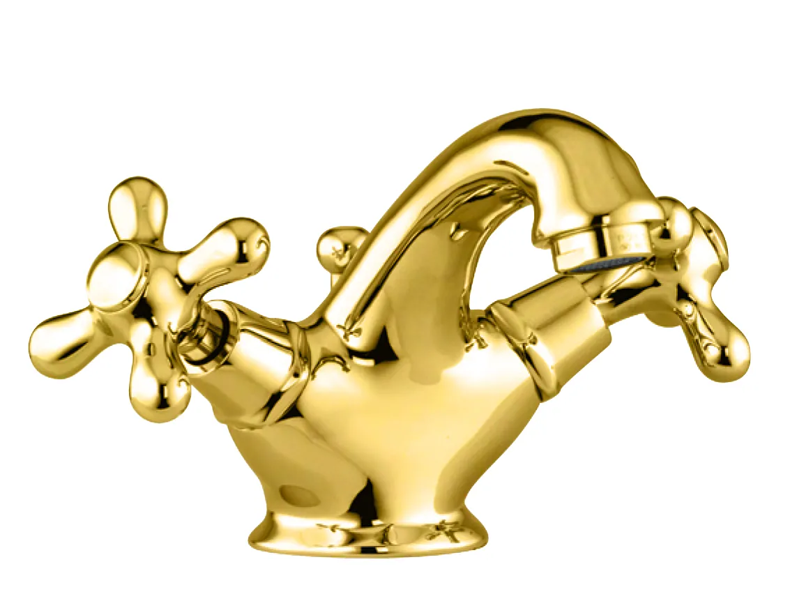
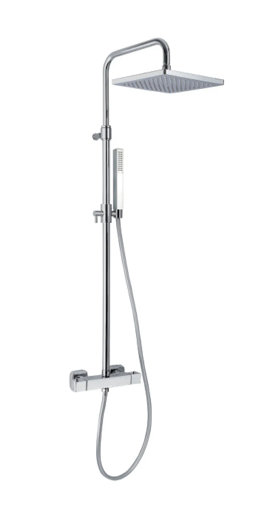
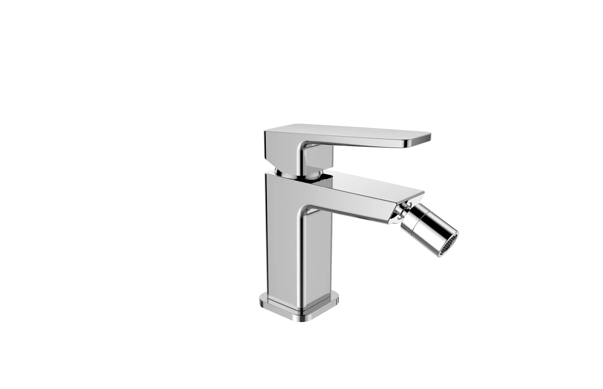

Αρχική / Εταιρεία
Made in Italy
από το 1965.
Η Fiore γεννήθηκε το 1965 και σήμερα είναι ένα γνωστό και εκτιμώμενο όνομα στον κλάδο, στην Ιταλία και σε όλο τον κόσμο. Η ανάπτυξή της στηρίζεται στην ικανότητα των ανθρώπων της και στις σταθερές επενδύσεις σε παραγωγή και τεχνολογία.



Από τη μελέτη
στη σειριακή παραγωγή.
Η παραγωγή ξεκινά από τη μελέτη σχεδιασμού, με βάση τις ανάγκες των πελατών, τις τάσεις της αγοράς και την επιθυμία για καινοτομία. Το Κέντρο Έρευνας και Σχεδιασμού Fiore πειραματίζεται συνεχώς με νέες μεθόδους κατεργασίας, φινιρίσματα και βελτιστοποίηση πόρων.
- Μηχανουργικές κατεργασίες, συναρμολόγηση και έλεγχος σε κάθε τεμάχιο.
- Ποιότητα προϊόντος, προσοχή στις ανάγκες του πελάτη και γρήγορη ανταπόκριση.
- Αποθήκη και αποστολές από την Ιταλία σε περισσότερες από 80 χώρες.
Τα εργοστάσιά μας
Το πρώτο εργοστάσιο στη Briga Novarese, Novara.
Το 1ο εργοστάσιο στο San Maurizio d’Opaglio, Novara.
Το 2ο εργοστάσιο στο San Maurizio d’Opaglio, Novara.
Έως σήμερα: το εργοστάσιο στο Borgomanero, Novara.
60ή επέτειος: 1965–2025.